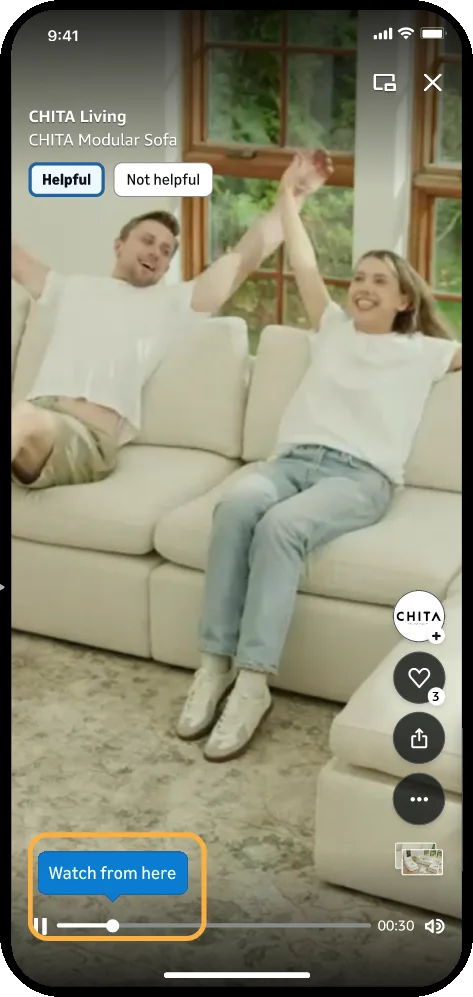

Show the evidence behind the answer
When an AI answers from a source, return the source with the answer, so the person can open it, read on, and check that it really says what the AI claims.
Where it sits in the flow
- AskThe person has a question, or a thing they want to find.
- AnswerThe AI returns something: an excerpt, a marker, a segment, a generated answer.
- CheckThe person looks at the evidence and decides whether to believe it.
- DecideThe person acts: proceeds, moves on, or corrects the AI.
What users needed
An answer on its own did not convince anyone. People needed to know where it came from, who was speaking, and what was said just before and after, before they would act on it. Their trust depended less on the answer being right than on being able to check it themselves.
The problem
A person asks a question. Somewhere in a very large body of material there is a passage, a page or seven seconds of a recording that answers it. The AI can find it. But an excerpt with no surroundings is a claim, not an answer: why should the person believe this is the right excerpt, from the right source, about the right thing?
The pattern
Return the excerpt as part of the answer, and return the means to check it with it. The person can see where it came from, open the surrounding source, keep reading or watching past the cut, and compare what the source actually says with what the AI said it says.
Where the answer is a moment inside something longer, do not cut it out. Give the whole source, opened at that moment, and say in advance that the jump is deliberate: a marker on the card, a "from here" label at the playhead. If the model has pointed to the wrong place, the person can move along the source and find the right one without help. Where the person has a preference about where evidence should come from (an official source, other users like them), let the evidence follow it.
The hardest design problem here is not getting the excerpt right. It is the chain of evidence. An answer the person can trace back to its source is one they can trust; an answer they cannot trace is one they have to take on faith, and people do not make decisions that matter on faith.
What makes it hard
An excerpt cut out of its source is tidy and disorienting: the person cannot tell what came before, and a cut in the wrong place looks like a wrong answer. Keeping the whole source solves that and raises the next problem: every piece of context competes with the answer for attention. Show too little and the excerpt is an unsupported assertion. Show too much and the person is back to going through the whole source. The context has to be there, quiet, and one step away.
When it fails
If the person cannot open the source, a wrong excerpt looks exactly like a right one. They find out later, after they have acted on it. The AI loses credit not just for this answer but for the next hundred.
The accessibility dividend
An excerpt with a stated source and a text summary of what it shows is an answer that works with the sound off, the picture off, or the media not loaded at all.
In my work
The multimodal version of Alexa, Amazon's AI shopping assistant, can answer a question with the most relevant seconds from existing videos. I tried the obvious design first, a snippet cut to the exact moment, and it tested as disorienting. The shipped design gives the whole video, opened at the seconds that answer, with a progress cue on the card so the jump reads as intentional, and the scrubber free so the shopper can recover when the model lands in the wrong place. It gives the most support for the decision while protecting the shopper from being misled by the model; shoppers bought more and returned less.
In pictures

Also written about in
- From watching to asking: how AI is reshaping how we consume shopping videos. Xinmin Weekly and Xinhuanet, June 1, 2026, in Chinese: Xinmin Weekly, Xinhuanet.